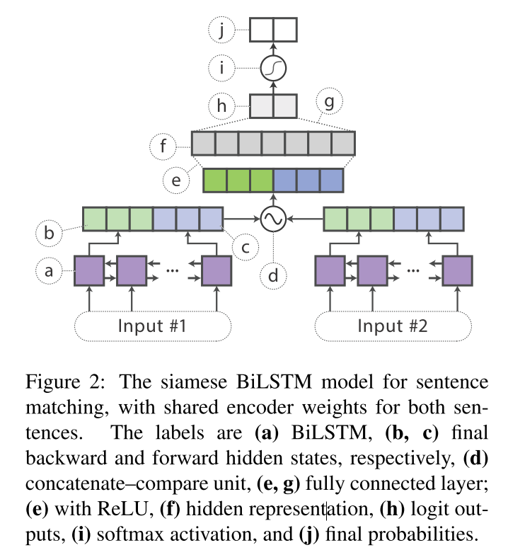

模型蒸馏笔记
2021-03-25
KD一个比较靠谱的解释是Naiyan的这篇
这里我直接粘过来
Knowledge Distill是一种简单弥补分类问题监督信号不足的办法。传统的分类问题，模型的目标是将输入的特征映射到输出空间的一个点上，例如在著名的Imagenet比赛中，就是要将所有可能的输入图片映射到输出空间的1000个点上。这么做的话这1000个点中的每一个点是一个one hot编码的类别信息。这样一个label能提供的监督信息只有log(class)这么多bit。然而在KD中，我们可以使用teacher model对于每个样本输出一个连续的label分布（soft softmax prob)，这样可以利用的监督信息就远比one hot的多了。另外一个角度的理解，大家可以想象如果只有label这样的一个目标的话，那么这个模型的目标就是把训练样本中每一类的样本强制映射到同一个点上，这样其实对于训练很有帮助的类内variance和类间distance就损失掉了。然而使用teacher model的输出可以恢复出这方面的信息。具体的举例就像是paper中讲的， 猫和狗的距离比猫和桌子要近，同时如果一个动物确实长得像猫又像狗，那么它是可以给两类都提供监督。综上所述，KD的核心思想在于”打散”原来压缩到了一个点的监督信息，让student模型的输出尽量match teacher模型的输出分布。其实要达到这个目标其实不一定使用teacher model，在数据标注或者采集的时候本身保留的不确定信息也可以帮助模型的训练。
0.1 Distilling the Knowledge in a Neural Network
原文：Distilling the Knowledge in a Neural Network
0.1.1 文章知识点总览
主要内容
介绍模型蒸馏的概念 模型蒸馏一共有两种方式
蒸馏集成模型
蒸馏复杂的大的网络模型（一般指参数过亿的）
新概念
提出了soft softmax prob
为了平滑soft softmax prob 的结果指定一个高温数T，没什么特别的含义，一个超参数
0.1.2 introduction
It is generally accepted that the objective function used for training should reflect the true objective of the user as closely as possible. Despite this, models are usually trained to optimize performance on the training data when the real objective is to generalize well to new data. It would clearly be better to train models to generalize well, but this requires information about the correct way to generalize and this information is not normally available. When we are distilling the knowledge from a large model into a small one, however, we can train the small model to generalize in the same way as the large model. If the cumbersome model generalizes well because, for example, it is the average of a large ensemble of different models, a small model trained to generalize in the same way will typically do much better on test data than a small model that is trained in the normal way on the same training set as was used to train the ensemble.(Hinton, Vinyals, and Dean 2015)
一般认为，用于训练的目标函数应该尽可能地反映用户的真实目标。训练模型通常是为了提高模型的泛化能力，能应用到更多的新的数据上面。显然，训练模型来很好地泛化会更好，但这需要关于正确泛化方式的信息，而这些信息通常是不可用的。然而，当将知识从一个大模型提炼成一个小模型时，可以训练小模型以与大模型相同的方式进行归纳。这句话简单来说就是不让小模型去学习数据的分布，而是让小模型去学习大模型的性能。
例如,对于一个复杂的大模型来说,用同样的方法训练一般化的小模型在测试数据上的表现通常要比在用于训练集成的相同训练集上以正常方式训练的小模型好得多。
- 大模型一般直参数量级非常大：bert，xlnet,T5等这种。
An obvious way to transfer the generalization ability of the cumbersome model to a small model is to use the class probabilities produced by the cumbersome model as “soft targets” for training the small model. For this transfer stage, we could use the same training set or a separate “transfer” set. When the cumbersome model is a large ensemble of simpler models, we can use an arithmetic or geometric mean of their individual predictive distributions as the soft targets. When the soft targets have high entropy, they provide much more information per training case than hard targets and much less variance in the gradient between training cases, so the small model can often be trained on much less data than the original cumbersome model and using a much higher learning rate.
将大模型的泛化能力迁移到小模型的一种明显的方法是用大网络模型产生的类概率作为小模型的“soft targets”进行训练。对于这个转移阶段，可以使用相同的训练集或单独的“transfer” set 。当大的网络模型是简单模型的大集合时(也就是集成模型)，可以使用它们各自预测分布的算术或几何均值作为soft targets。当soft targets有很高的熵,它们为每个训练案例提供了比硬目标更多的信息，并且训练案例之间梯度的方差也更小，因此小模型通常可以在比原始复杂模型少得多的数据上进行训练，并且使用更高的学习率。
梯度方差更小，说明蒸馏得到的小模型是比较平稳的更加容易收敛的。
For tasks like MNIST in which the cumbersome model almost always produces the correct answer with very high confidence, much of the information about the learned function resides in the ratios of very small probabilities in the soft targets. For example, one version of a 2 may be given a probability of \(10^{-6}\) of being a 3 and \(10^{-9}\) of being a 7 whereas for another version it may be the other way around. This is valuable information that defines a rich similarity structure over the data (i. e. it says which 2 ’s look like 3 ’s and which look like 7 ’s) but it has very little influence on the cross-entropy cost function during the transfer stage because the probabilities are so close to zero. Caruana and his collaborators circumvent this problem by using the logits (the inputs to the final softmax) rather than the probabilities produced by the softmax as the targets for learning the small model and they minimize the squared difference between the logits produced by the cumbersome model and the logits produced by the small model. Our more general solution, called “distillation”, is to raise the temperature of the final softmax until the cumbersome model produces a suitably soft set of targets. We then use the same high temperature when training the small model to match these soft targets. We show later that matching the logits of the cumbersome model is actually a special case of distillation.
对于像MNIST这样的任务，复杂的大模型几乎总是以很高的置信度得出正确分类，关于学习函数的大部分信息都存在于软目标中非常小的概率比率中。例如，在MNIST数据中，对于某个2的输入，对于2 的预测概率会很高, 而对于2类似的数字，例如3和7的预测概率为 \(10^{-6}\) 和 \(10^{-9}\) 。这样的话, teacher网络学到数据的相似信息（例如数字2和3，7很类似) 很难传达给student网络。由于它们 的概率值接近0。因此，Caruana等人通过使用logits作为目标解决了这个问题，而不是softmax产生的概率作为学习小模型的目标，它们最小化了复杂大模型产生的对数和小模型产生的对数之间的差的平方。于是有了soft target.后文有详细的介绍。
hard target：以二分类为例：样本预测为0/1，只属于0/1其中一个，也就是样本原有的标签。 soft targets:样本预测为0/1的概率，是0-1范围内的一个概率数值。
- soft targets 和label smoothing什么关系？
个人感觉label smoothing是soft targets的特殊情况，权重分别取0和1时候是等价的
因此可以给出蒸馏的定义：
也是迁移学习的范畴，但是这里的迁移不是把训练好的预训练模型去做下游任务的fine-tune,而是利用小模型去学习大模型的性能。把大模型的学习性能蒸馏给了小模型。利用小模型学习大模型得到的soft-target的分布。
参考李rumor的一个总结就是：
蒸馏这个概念之所以work，核心思想是因为好模型的目标不是拟合训练数据，而是学习如何泛化到新的数据。所以蒸馏的目标是让学生模型学习到教师模型的泛化能力，理论上得到的结果会比单纯拟合训练数据的学生模型要好。李rumor
0.1.3 Distillation
蒸馏具体的做法
Neural networks typically produce class probabilities by using a “softmax” output layer that converts the logit, \(z_{i}\), computed for each class into a probability, \(q_{i}\), by comparing \(z_{i}\) with the other logits.
下面是计算soft softmax概率值的公式。于基本的softmax不同的地方在于引入了一个参数T
- softmax做二分类和sigmoid做二分类谁的效果更好一些？并给出原因
\[ q_{i}=\frac{\exp \left(z_{i} / T\right)}{\sum_{j} \exp \left(z_{j} / T\right)} \]
where \(T\) is a temperature that is normally set to \(1 .\) Using a higher value for \(T\) produces a softer probability distribution over classes.
T是一个温度值，通常设置为1，当T取值较高的时候会得到一个“soft”概率分布的值。
对Teacher网络的logit如此处理，得到的就是soft target。相比于one-hot的ground truth或softmax的prob输出，这个软化之后的target能够提供更多的类别间和类内信息。 可以对待训练的Student网络也如此处理，这样就得到了另外一个“交叉熵”损失：
In the simplest form of distillation, knowledge is transferred to the distilled model by training it on a transfer set and using a soft target distribution for each case in the transfer set that is produced by using the cumbersome model with a high temperature in its softmax. The same high temperature is used when training the distilled model, but after it has been trained it uses a temperature of \(1 .\)
简单的蒸馏方式，从模型迁移的角度去理解
在蒸馏的最简单形式中，知识转移到蒸馏模型，方法是在一个转移集上训练它，并对转移集中的每个情况使用软目标分布，这是使用softmax中带有较大T的大模型产生的。训练蒸馏模型时使用相同的T，但训练后使用T=1。简单来说就是蒸馏模型和原模型使用相同的T。
简单的来说其中的一种蒸馏方式是根据“迁移模型”的方式，大模型和蒸馏模型使用的是相同的T，将
- T一个小模型学习大模型的超参数，温度函数
When the correct labels are known for all or some of the transfer set, this method can be significantly improved by also training the distilled model to produce the correct labels. One way to do this is to use the correct labels to modify the soft targets, but we found that a better way is to simply use a weighted average of two different objective functions. The first objective function is the cross entropy with the soft targets and this cross entropy is computed using the same high temperature in the softmax of the distilled model as was used for generating the soft targets from the cumbersome model. The second objective function is the cross entropy with the correct labels. This is computed using exactly the same logits in softmax of the distilled model but at a temperature of \(1 .\) We found that the best results were generally obtained by using a condiderably lower weight on the second objective function. Since the magnitudes of the gradients produced by the soft targets scale as \(1 / T^{2}\) it is important to multiply them by \(T^{2}\) when using both hard and soft targets. This ensures that the relative contributions of the hard and soft targets remain roughly unchanged if the temperature used for distillation is changed while experimenting with meta-parameters.
第二种目标函数： 当所有或部分传输集都知道正确的标签时，通过训练蒸馏模型产生正确的标签，可以显著改进这种方法。一种方法是使用正确的标签来修改软目标，一个更好的方法是简单地使用两个不同目标函数的加权平均值。
第1种目标函数是与软目标的交叉熵，该交叉熵的计算使用的是蒸馏模型的softmax中的high temperature，与从繁琐的模型生成软目标时使用的T相同。
第2种目标函数于正确标签的交叉熵,此时T取值为1。
\(L=(1-\alpha) C E(y, p)+\alpha C E(q, p) \cdot T^{2}\)
最终效果较好的实验是给第二个目标函数赋予一个较低的权重。因为梯度的范围是通过软目标产生的，会变为原来的\(1 / T^{2}\)，当同时使用hard and soft targets时候,软目标函数需要乘上\(T^{2}\)。这就保证了在使用meta-parameters进行实验时，如果用于蒸馏的温度发生变化,硬目标和软目标的相对贡献大致保持不变。
0.1.4 Matching logits is a special case of distillation
Each case in the transfer set contributes a cross-entropy gradient, \(d C / d z_{i}\) with respect to each logit, \(z_{i}\) of the distilled model. If the cumbersome model has logits \(v_{i}\) which produce soft target probabilities \(p_{i}\) and the transfer training is done at a temperature of \(T,\) this gradient is given by:
每个样本会得到一个交叉熵的梯度，\(d C / d z_{i}\)表示低i个logit，\(z_{i}\)表示蒸馏模型。复杂模型在某个温度T下得到梯度计算公式如下
\[ \frac{\partial C}{\partial z_{i}}=\frac{1}{T}\left(q_{i}-p_{i}\right)=\frac{1}{T}\left(\frac{e^{z_{i} / T}}{\sum_{j} e^{z_{j} / T}}-\frac{e^{v_{i} / T}}{\sum_{j} e^{v_{j} / T}}\right) \]
If the temperature is high compared with the magnitude of the logits, we can approximate:
温度比对数的大小高，可以近似得到
\[ \frac{\partial C}{\partial z_{i}} \approx \frac{1}{T}\left(\frac{1+z_{i} / T}{N+\sum_{j} z_{j} / T}-\frac{1+v_{i} / T}{N+\sum_{j} v_{j} / T}\right) \] If we now assume that the logits have been zero-meaned separately for each transfer case so that \(\sum_{j} z_{j}=\sum_{j} v_{j}=0\) Eq. 3 simplifies to:
\[ \frac{\partial C}{\partial z_{i}} \approx \frac{1}{N T^{2}}\left(z_{i}-v_{i}\right) \]
So in the high temperature limit, distillation is equivalent to minimizing \(1 / 2\left(z_{i}-v_{i}\right)^{2},\) provided the logits are zero-meaned separately for each transfer case. At lower temperatures, distillation pays much less attention to matching logits that are much more negative than the average. This is potentially advantageous because these logits are almost completely unconstrained by the cost function used for training the cumbersome model so they could be very noisy. On the other hand, the very negative logits may convey useful information about the knowledge acquired by the cumbersome model. Which of these effects dominates is an empirical question. We show that when the distilled model is much too small to capture all of the knowledege in the cumbersome model, intermediate temperatures work best which strongly suggests that ignoring the large negative logits can be helpful.
若T很大，且logits分布的均值为0时，优化概率交叉熵和logits的平方差是等价的，因此学习软目标的交叉概率和学习logits在此时是等价的。
hinton这篇主要是介绍模型蒸馏的一个思路，蒸馏模型学习的是什么。也是后面研究的基础。 把多个模型的知识提炼给单个的模型，教师模型教学生模型。
0.1.5 Experiment
这篇文章的实验部分如下
This net achieved 67 test errors whereas a smaller net with two hidden layers of 800 rectified linear hidden units and no regularization achieved 146 errors. But if the smaller net was regularized solely by adding the additional task of matching the soft targets produced by the large net at a temperature of 20 , it achieved 74 test errors. This shows that soft targets can transfer a great deal of knowledge to the distilled model, including the knowledge about how to generalize that is learned from translated training data even though the transfer set does not contain any translations.
在MNIST这个数据集上，先使用大的网络进行训练测试集错误67个，使用小网络训练测试集错误146个。加入soft targets到目标函数中相当于加入了正则项，测试集的错误的的个数降低到了74个。模型蒸馏确实是使模型的结果变好了
Table 1 shows that, indeed, our distillation approach is able to extract more useful information from the training set than simply using the hard labels to train a single model. More than \(80 \%\) of the improvement in frame classification accuracy achieved by using an ensemble of 10 models is transferred to the distilled model which is similar to the improvement we observed in our preliminary experiments on MNIST. The ensemble gives a smaller improvement on the ultimate objective of WER (on a 23K-word test set) due to the mismatch in the objective function, but again, the improvement in WER achieved by the ensemble is transferred to the distilled model.
在speech recognition领域中 根据表1的实验结果来看，minst测试集在模型蒸馏的结果上面比baseline的效果是提升的，比10个模型做emsemble的结果略低，说明蒸馏模型确实可以学习到大模型的参数。
0.1.6 结论
We have shown that distilling works very well for transferring knowledge from an ensemble or from a large highly regularized model into a smaller, distilled model.
本文展示了蒸馏的方式包括，从ensemble学习中进行知识蒸馏,让蒸馏模型能够无线接近于集成模型的结果和将大的正则化的模型转移到小模型上面。
0.2 Distilling Task-Specific Knowledge from BERT into Simple Neural Networks
原文：Distilling Task-Specific Knowledge from BERT into Simple Neural Networks
0.2.1 文章知识点总览
模型：使用单层的bilstm对bert进行蒸馏
目标函数：教师网络和学生网络logits的mse
模型结构：

模型效果对比：
下面对每部分要点进行详细解读~
0.2.2 abstract
We propose to distill knowledge from BERT, a state-ofthe-art language representation model, into a single-layer BiLSTM, as well as its siamese counterpart for sentence-pair tasks. (Tang et al. 2019)
这篇文章是对bert蒸馏蒸馏到单层的BiLSTM。也就是之前提到的其中一种蒸馏方式用小的模型对复杂的大模型进行蒸馏。
0.2.3 Introduction
Our motivation is twofold: we question whether a simple architecture actually lacks representation power for text modeling, and we wish to study effective approaches to transfer knowledge from BERT to a BiLSTM. Concretely, we leverage the knowledge distillation approach (Ba and Caruana, 2014; Hinton et al., 2015)\(,\) where a larger model serves as a teacher and a small model learns to mimic the teacher as a student. This approach is model agnostic, making knowledge transfer possible between BERT and a different neural architecture, such as a single-layer BiLSTM, in our case.
本文是使用的单层的BiLSTM对bert进行蒸馏，原因有2：作者质疑一个简单的架构是否真的缺乏文本建模的表示能力并且希望能够让BiLSTM更好的学习到bert的性能。具体来说就是hinton提出的模型蒸馏的方式，大的模型作为teacher小模型学着模仿老师当学生。这种方法是模型不可知的，使知识在BERT和不同的神经结构之间转移成为可能，比如本文的单层的BiLSTM。
To facilitate effective knowledge transfer, however, we often require a large, unlabeled dataset. The teacher model provides the probability logits and estimated labels for these unannotated samples, and the student network learns from the teacher’s outputs. In computer vision, unlabeled images are usually easy to obtain through augmenting the data using rotation, additive noise,and other distortions. However, obtaining additional, even unlabeled samples for a specific task can be difficult in NLP. Traditional data augmentation in NLP is typically task-specific (Wang and Eisner, 2016; Serban et al., 2016) and difficult to extend to other NLP tasks. To this end, we further propose a novel, rule-based textual data augmentation approach for constructing the knowledge transfer set.
迁移学习一般时在一个非常大的无label的数据集上面。教师模型为这些未标注的样本提供了probability logits和估计标签，学生网络从教师网络的输出中学习。
在cv中，通过使用旋转、加性噪声和其他畸变来进行数据增强是比较容易的。 然而，在NLP任务中做数据增强是相对困难的。传统的NLP数据增强是典型的任务特定的(Wang and Eisner, 2016;Serban等人，2016)，难以扩展到其他NLP任务。为此，本文进一步提出了一种新的基于规则的文本数据增强方法来构建知识转移集。
We evaluate our approach on three tasks in sentence classification and sentence matching. Experiments show that our knowledge distillation procedure significantly outperforms training the original simpler network alone.
在三个文本分类任务和文本匹配上评估本文的方法。实验表明本文的知识蒸馏过程明显优于单独训练原始的简单网络。
With our approach, a shallow BiLSTMbased model achieves results comparable to Embeddings from Language Models (ELMo; Peters et al., 2018 ), but uses around 100 times fewer parameters and performs inference 15 times faster. Therefore, our model becomes a state-of-the-art “small” model for neural NLP.
本文的基于bilstm的浅层模型可以达到语言模型(ELMo)的效果，但使用的参数约少100倍，推理速度快15倍。因此，本文的模型成为最先进的“小”模型的神经自然语言处理。
0.2.4 Approach
First, we choose the desired teacher and student models for the knowledge distillation approach. Then, we describe our distillation procedure, which comprises two major components: first, the addition of a logits-regression objective, and second, the construction of a transfer dataset, which augments the training set for more effective knowledge transfer.
首先，我们选择所需的教师和学生模型的知识提炼方法。然后，我们描述了我们的蒸馏过程，这包括两个主要组成部分: - 添加一个logits-回归 作为目标函数。
- 构建一个迁移数据集，以增强训练集，以实现更有效的知识迁移。
每一层的含义解释的还是非常清楚的
0.2.5 Model Architecture
模型结果详细描述 >For the teacher network, we use the pretrained, fine-tuned BERT (Devlin et al., 2018) model,
教师模型使用的是预训练的bert
In contrast, our student model is a single-layer BiLSTM with a non-linear classifier. After feeding the input word embeddings into the BiLSTM, the hidden states of the last step in each direction are concatenated and fed to a fully connected layer with rectified linear units (ReLUs), whose output is then passed to a softmax layer for classification (Figure 1). For sentence-pair tasks, we share BiLSTM encoder weights in a siamese architecture between the two sentence encoders, producing sentence vectors \(\boldsymbol{h}_{s 1}\) and \(\boldsymbol{h}_{s 2}\) (Figure 2). We then apply a standard concatenate-compare operation (Wang et al., 2018) between the two sentence vectors: \(f\left(\boldsymbol{h}_{s 1}, \boldsymbol{h}_{s 2}\right)=\left[\boldsymbol{h}_{s 1}, \boldsymbol{h}_{s 2}, \boldsymbol{h}_{s 1} \odot\right.\) \(\left.\boldsymbol{h}_{s 2},\left|\boldsymbol{h}_{s 1}-\boldsymbol{h}_{s 2}\right|\right],\) where \(\odot\) denotes elementwise multiplication. We feed this output to a ReLU-activated classifier.
学生模型是具有非线性分类器的单层的BiLSTM。输入词嵌入到BiLSTM后，最后一步在每个方向上的隐藏状态被连接并馈送到带有整流线性单元(ReLUs)的全连接层，其输出随后被传递到softmax层进行分类(图1)。
对于句子对的任务，本文是在一个句子对的encoder中共享孪生BiLSTM encoder的权重，处理成句子两个句子向量 \(\boldsymbol{h}_{s 1}\) and \(\boldsymbol{h}_{s 2}\)，具体如图2所示
孪生的bilstm对句子匹配问题共享encoder 的权重，其余每个符号看具体的解释。
It should be emphasized that we restrict the architecture engineering to a minimum to revisit the representation power of BiLSTM itself. We avoid any additional tricks, such as attention and layer normalization.
严格的使用bilstm结构，没有多余的attention和layernorm
0.2.6 Distillation Objective
本文的目标函数
The distillation objective is to penalize the mean-squared-error (MSE) loss between the student network’s logits against the teacher’s logits:
蒸馏模型的目标函数是教师网络logits和学生网络logits的mse，公示如下：
\[ \mathcal{L}_{\text {distill }}=\left\|\boldsymbol{z}^{(B)}-\boldsymbol{z}^{(S)}\right\|_{2}^{2} \] - [ ] 这里为什么用mse，而不是kl散度，kl三度不是更能衡量两个网络的相似性嘛？
where \(z^{(B)}\) and \(z^{(S)}\) are the teacher’s and student’s logits, respectively.
\(z^{(B)}\) 和 \(z^{(S)}\) 分别是教师网络和学生网络的logits值
Other measures such as cross entropy with soft targets are viable as well (Hinton et al., 2015 ); however, in our preliminary experiments, we found MSE to perform slightly better. At training time, the distilling objective can be used in conjunction with a traditional crossentropy loss against a one-hot label \(t,\) given by
其他的测量方法，如带有软目标的交叉熵也是可行的(Hinton等人，2015);然而，本文的初步实验中发现MSE的表现稍好一些。在训练时，可以将蒸馏目标与传统的交叉熵损失结合使用，对一个热标签\(t，\)给定
\[ \begin{array}{l} \mathcal{L}=\alpha \cdot \mathcal{L}_{\mathrm{CE}}+(1-\alpha) \cdot \mathcal{L}_{\text {distill }} \\ =-\alpha \sum_{i} t_{i} \log y_{i}^{(S)}-(1-\alpha)\left\|\boldsymbol{z}^{(B)}-\boldsymbol{z}^{(S)}\right\|_{2}^{2} \end{array} \]
When distilling with a labeled dataset, the one-hot target \(t\) is simply the ground-truth label. When distilling with an unlabeled dataset, we use the predicted label by the teacher, i.e., \(t_{i}=1\) if \(i=\operatorname{argmax} \boldsymbol{y}^{(B)}\) and 0 otherwise.
对Teacher网络的logit如此处理，得到的就是soft target。相比于one-hot的ground truth或softmax的prob输出，这个软化之后的target能够提供更多的类别间和类内信息。 可以对待训练的Student网络也如此处理
0.2.7 Data Augmentation for Distillation
蒸馏过程中的数据增强方法
原因是解决标注样本过少的问题，教师网络进行蒸馏的数据量不够
Masking 使用bert的随机mask进行数据增强（nlpcda那个包中有这个）
POS-guided word replacement. 新词替换（可能会是语义发生变化）
n-gram sampling.采样（这个感觉中文不适用啊）
0.2.8 对照实验部分
4个数据集都是常见的文本分类数据集
We present the results of our models as well as baselines in Table \(1 .\) For \(\mathrm{QQP},\) we report both \(\mathrm{F}_{1}\) and accuracy, since the dataset is slightly unbalanced. Following GLUE, we report the average score of each model on the datasets.
对比的是F1 和accuracy值，因为样本稍微有些不平衡，从四个数据集上面看，蒸馏模型的效果确实不错，都达到了sota
其他的似乎什么重点了,也不知道数据增强之前和之后的对比实验。只给了增强之后的实验。
0.3 Patient Knowledge Distillation for BERT Model Compression
原文：Patient Knowledge Distillation for BERT Model Compression
0.3.1 文章知识点总览
提出一种Patient Knowledge Distillation方式
训练了一个非常有“耐心” 的学生网络模型，能够学习教师网络的多层知识，不只是最后几层或者前几层，学习的足够充分。
模型结构：Patient student，蒸馏bert网络的中间层以及最后的输出层，多层蒸馏
目标函数：
\[ L_{P K D}=(1-\alpha) L_{C E}^{s}+\alpha L_{D S}+\beta L_{P T} \]
是向教师网络学习与向正确样本学习以及教师网络的而外的训练损失的加权和，由三部分组成
\(L_{C E}\)是学习标注样本的交叉熵
\(L_{D S}\)是学习教师网路的交叉熵
\(L_{P T}\)教师网络额外的训练损失
模型结果对比
对中间层进行蒸馏的效果是要好于只对教师网络输出层蒸馏的效果的
直接看下面的实验分析
0.3.2 abstract
In order to alleviate this resource hunger in large-scale model training,we propose a Patient Knowledge Distillation approach to compress an original large model (teacher) into an equally-effective lightweight shallow network (student). (Sun et al. 2019)
例如像bert这种重量级的模型是非常吃算力的，因此本文提出了Patient知识蒸馏的方法来压缩原始的原始的庞大的教师网络模型变成一个轻量级的学生模型。
Different from previous knowledge distillation methods, which only use the output from the last layer of the teacher network for distillation, our student model patiently learns from multiple intermediate layers of the teacher model for incremental knowledge extraction, following two strategies:
本文的方法和之前的蒸馏模型的不同之处在于，之前的蒸馏模型（比如hinton的）只对教师网络的输出层进行蒸馏，本文的学生网络会还会耐心的学习教师网络的中间层进行知识的提取。主要方法如下：
- PKD-Last: learning from the last k layers; and (ii) PKD-Skip: learning from every k layers.
PKD-Last：学习最后K层的知识，PKD-Skip：对中间层每隔k层学习一次
These two patient distillation schemes enable the exploitation of rich information in the teacher’s hidden layers, and encourage the student model to patiently learn from and imitate the teacher through a multi-layer distillation process.
这两种蒸馏的方式能够充分的学习到教师网络的隐藏层信息，并且能过够通过多层蒸馏的方式模拟出教师网络，从而激发学生网络的“耐心”（个人感觉就是增加学生网络的参数）
- 所有标注数据都叫做ground truth
0.3.3 Introduction
In our approach,the teacher model outputs probability logits and predicts labels for the training samples (extendable to additional unannotated samples), and the student model learns from the teacher network to mimic the teacher’s prediction.
本文教师网络输出的是probability logits，并且对训练样本进行标签预测(应该用来做数据增强的)，学生模型用来模拟老师的预测标签。
we adopt a patient learning mechanism: instead of learning parameters from only the last layer of the teacher,we encourage the student model to extract knowledge also from previous layers of the teacher network. We call this ‘Patient Knowledge Distillation’. This patient learner has the advantage of distilling rich information through the deep structure of the teacher network for multi-layer knowledge distillation.
本文采用了一种patient学习机制，激励学生模型从教师网络模型的多层提取知识而不只是最后一层。
0.3.4 Patient Knowledge Distillation
Problem Definition The original large teacher network is represented by a function \(f(\mathbf{x} ; \theta)\), where \(\mathrm{x}\) is the input to the network, and \(\theta\) denotes the model parameters. The goal of knowledge distillation is to learn a new set of parameters \(\theta^{\prime}\) for a shallower student network \(g\left(\mathbf{x} ; \theta^{\prime}\right),\) such that the student network achieves similar performance to the teacher, with much lower computational cost. Our strategy is to force the student model to imitate outputs from the teacher model on the training dataset with a defined objective \(L_{K D}\).
\(f(\mathbf{x} ; \theta)\)表示大的教师模型，\(\mathrm{x}\) 是模型的输入，\(\theta\) 表示模型参数。知识蒸馏的目标是让浅层的学生网络\(g\left(\mathbf{x} ; \theta^{\prime}\right)\)学习到一组新的参数\(\theta^{\prime}\) 学生网络消耗的算力是非常的低的。\(L_{K D}\)是本文的目标函数。
目标函数
Assume \(\left\{\mathbf{x}_{i}, \mathbf{y}_{i}\right\}_{i=1}^{N}\) are \(N\) training samples, where \(\mathbf{x}_{i}\) is the \(i\) -th input instance for BERT, and \(\mathbf{y}_{i}\) is the corresponding ground-truth label. BERT first computes a contextualized embedding \(\mathbf{h}_{i}=\operatorname{BERT}\left(\mathbf{x}_{i}\right) \in \mathbb{R}^{d} .\) Then, a softmax layer \(\hat{\mathbf{y}}_{i}=P\left(\mathbf{y}_{i} \mid \mathbf{x}_{i}\right)=\operatorname{softmax}\left(\mathbf{W h}_{i}\right)\) for classifica- tion is applied to the embedding of BERT output, where \(\mathbf{W}\) is a weight matrix to be learned.
假设\(\left\{\mathbf{x}_{i},\mathbf{y}_{i}\right\}_{i=1}^{N}\)是N个训练样本，\(\mathbf{x}_{i}\)是bert的低i个输入，\(\mathbf{y}_{i}\)是第i个ground-truth label，bert首先计算上下文的词向量 \(\mathbf{h}_{i}=\operatorname{BERT}\left(\mathbf{x}_{i}\right) \in \mathbb{R}^{d}\) ，\(\hat{\mathbf{y}}_{i}=P\left(\mathbf{y}_{i} \mid \mathbf{x}_{i}\right)=\operatorname{softmax}\left(\mathbf{W h}_{i}\right)\)是softmax层得到的分类输出。\(\mathbf{W}\)是学到的参数
To apply knowledge distillation, first we need to train a teacher network. For example, to train a 12-layer BERT-Base as the teacher model, the learned parameters are denoted as:
首先是对12层的BERT-Base进行训练，得到的参数定义如下。
\[ \hat{\theta}^{t}=\arg \min _{\theta} \sum_{i \in[N]} L_{C E}^{t}\left(\mathbf{x}_{i}, \mathbf{y}_{i} ;\left[\theta_{\mathrm{BERT}_{12}}, \mathbf{W}\right]\right) \]
where the superscript \(t\) denotes parameters in the teacher model, \([N]\) denotes set \(\{1,2, \ldots, N\}\) \(L_{C E}^{t}\) denotes the cross-entropy loss for the teacher training, and \(\theta_{\mathrm{BERT}_{12}}\) denotes parameters of \(\mathrm{BERT}_{12}\)
\(t\) 是教师网络的参数，\(\{1,2, \ldots, N\}\) \(L_{C E}^{t}\) 教师网络训练的交叉熵损失函数，\(\theta_{\mathrm{BERT}_{12}}\)表示 \(\mathrm{BERT}_{12}\)的参数
The output probability for any given input \(\mathbf{x}_{i}\) can be formulated as:
对于每个输入的输出概率公式如下
\[ \begin{aligned} \hat{\mathbf{y}}_{i} &=P^{t}\left(\mathbf{y}_{i} \mid \mathbf{x}_{i}\right)=\operatorname{softmax}\left(\frac{\mathbf{W h}_{i}}{T}\right) \\ &=\operatorname{softmax}\left(\frac{\mathbf{W} \cdot \operatorname{BERT}_{12}\left(\mathbf{x}_{i} ; \hat{\theta}^{t}\right)}{T}\right) \end{aligned} \]
where \(P^{t}(\cdot \mid \cdot)\) denotes the probability output from the teacher. \(\hat{\mathbf{y}}_{i}\) is fixed as soft labels, and \(T\) is the temperature used in KD, which controls how much to rely on the teacher’s soft predictions. A higher temperature produces a more diverse probability distribution over classes (Hinton et al., 2015). Similarly, let \(\theta^{s}\) denote parameters to be learned for the student model, and \(P^{s}(\cdot \mid \cdot)\) denote the corresponding probability output from the student model. Thus, the distance between the teacher’s prediction and the student’s prediction can be defined as:
\(P^{t}(\cdot \mid \cdot)\)表示教师网络的输出概率，\(\hat{\mathbf{y}}_{i}\) 是软label，T是KD的温度参数，决定了在多大程度上依赖于老师网络的软预测。温度越高，分类的概率分布就越多样化，\(\theta^{s}\)是学生模型学习的参数，\(P^{s}(\cdot \mid \cdot)\)是学生模型的输出概率，因此：教师的预测与学生的预测之间的距离可以定义为:
\[ \begin{array}{r} L_{D S}=-\sum_{i \in[N]} \sum_{c \in C}\left[P^{t}\left(\mathbf{y}_{i}=c \mid \mathbf{x}_{i} ; \hat{\theta}^{t}\right)\right. \\ \left.\log P^{s}\left(\mathbf{y}_{i}=c \mid \mathbf{x}_{i} ; \theta^{s}\right)\right] \end{array} \]
这个是学生网络像教师网络学习损失函数
where \(c\) is a class label and \(C\) denotes the set of class labels.
\(c\)是一个分类标签，\(C\)是一个类别的标签
Besides encouraging the student model to imitate the teacher’s behavior, we can also fine-tune the student model on target tasks, where taskspecific cross-entropy loss is included for model training:
学生网络除了向教师网络学习之外，还想要像正确的标注数据学习，模型训练中包含了特定任务的交叉熵损失:
\[ \begin{aligned} L_{C E}^{s}=-\sum_{i \in[N]} & \sum_{c \in C}\left[\mathbb{1}\left[\mathbf{y}_{i}=c\right]\right.\\ &\left.\log P^{s}\left(\mathbf{y}_{i}=c \mid \mathbf{x}_{i} ; \theta^{s}\right)\right] \end{aligned} \]
Thus, the final objective function for knowledge distillation can be formulated as:
最终本文的目标函数如下，是教师网络和学生网络的距离损失和与真实数据交叉熵的加权和
\[ L_{K D}=(1-\alpha) L_{C E}^{s}+\alpha L_{D S} \]
模型结构如图
a图是每两层学习教师模型的一次输出叫PKD-Skip,b图是学生网络学习教师模型最后6层,也叫PKD-last，Trm：transformer。
Learning from the hidden states of all the tokens is computationally expensive, and may introduce noise. In the original BERT implementation (Devlin et al., 2018), prediction is performed by only using the output from the last layer’s [CLS ] token. In some variants of BERT, like SDNet (Zhu et al., 2018 ), a weighted average of all layers’ [CLS ] embeddings is applied.
因为从隐藏层学习表征非常的消耗算力，而且有可能会产生噪音。在最初的BERT实现中，预测仅通过使用最后一层的[CLS]的token输出来执行。在BERT的一些变体中，如SDNet，应用了所有层[CLS]嵌入的加权平均。
In general, the final logit can be computed based on \(\mathbf{h}_{\text {final }}=\) \(\sum_{j \in[k]} w_{j} \mathbf{h}_{j},\) where \(w_{j}\) could be either learned parameters or a pre-defined hyper-parameter, \(\mathbf{h}_{j}\) is the embedding of [CLS] from the hidden layer \(j,\) and \(k\) is the number of hidden layers.
通常最后几层的logit能够根据\(\mathbf{h}_{\text {final }}=\) \(\sum_{j \in[k]} w_{j} \mathbf{h}_{j}\)， \(w_{j}\) 是可以被学习到的， \(\mathbf{h}_{j}\)是[CLS]隐藏层的参数，k表示隐藏层的数量。
Derived from this, if the compressed model can learn from the representation of [ \(\mathrm{CLS}\) ] in the teacher’s intermediate layers for any given input, it has the potential of gaining a generalization ability similar to the teacher model.
由此可知，对于任何给定的输入，如果压缩模型能够从教师中间层[\(\mathrm{CLS}\)]的表示中学习，那么它就有可能获得类似于教师模型的泛化能力。
Motivated by this, in our Patient-KD framework, the student is cultivated to imitate the representations only for the [CLS] token in the intermediate layers, following the intuition aforementioned that the [CLS] token is important in predicting the final labels. For an input \(\mathbf{x}_{i},\) the outputs of the [CLS ] tokens for all the layers are denoted as:
基于此，本文的Patient-KD框架中，学生网络是仅模仿中间层中的[CLS]标记的表征，遵循前面提到的[CLS]标记在预测最终标签中很重要的直觉。对于输入\(\mathbf{x}_{i}，\)所有层的[CLS]令牌的输出表示为:
\[ \mathbf{h}_{i}=\left[\mathbf{h}_{i, 1}, \mathbf{h}_{i, 2}, \ldots, \mathbf{h}_{i, k}\right]=\operatorname{BERT}_{k}\left(\mathbf{x}_{i}\right) \in \mathbb{R}^{k \times d} \]
We denote the set of intermediate layers to distill knowledge from as \(I_{p t}\).Take distilling from BERT \(_{12}\) to \(\operatorname{BERT}_{6}\) as an example. For the PKDSkip strategy, \(I_{p t}=\{2,4,6,8,10\} ;\) and for the PKD-Last strategy, \(I_{p t}=\{7,8,9,10,11\} .\) Note that \(k=5\) for both cases, because the output from the last layer (e.g., Layer 12 for BERT-Base) is omitted since its hidden states are connected to the softmax layer, which is already included in the KD loss defined in Eqn. (5). In general, for BERT student with \(n\) layers, \(k\) always equals to \(n-1\). The additional training loss introduced by the patient teacher is defined as the mean-square loss between the normalized hidden states:
将进行知识蒸馏的中间层表示为 \(I_{p t}\)，以将12层bert蒸馏为6层为例。对于中间层的蒸馏策略PKDSkip有\(I_{p t}=\{2,4,6,8,10\}\),对于最后几层的蒸馏策略\(I_{p t}=\{7,8,9,10,11\}\)。隐藏层的个数是5，适用于两种情况。因为最后一层的输出(例如，BERT-Base的第12层)被省略，因为它的隐藏状态连接到softmax层，它已经包含在公式（5）中定义的KD损失中。一般来说，对于有\(n\)层的BERT学生，\(k\)总是等于\(n-1\)。由有“耐心”的老师引入的额外训练损失定义为归一化隐藏状态之间的均方损失:
\[ L_{P T}=\sum_{i=1}^{N} \sum_{j=1}^{M}\left\|\frac{\mathbf{h}_{i, j}^{s}}{\left\|\mathbf{h}_{i, j}^{s}\right\|_{2}}-\frac{\mathbf{h}_{i, I_{p t}(j)}^{t}}{\left\|\mathbf{h}_{i, I_{p t}(j)}^{t}\right\|_{2}}\right\|_{2}^{2} \]
where \(M\) denotes the number of layers in the student network, \(N\) is the number of training samples, and the superscripts \(s\) and \(t\) in \(\mathbf{h}\) indicate the student and the teacher model, respectively. Combined with the KD loss introduced in Section 3.1 the final objective function can be formulated as:
\(M\)表示学生网络的层数，\(N\)是训练样本数，\(\mathbf{h}\)中的上标\(s\)和\(t\)分别表示学生模型和教师模型。结合上面介绍的KD损失，最终目标函数可表示为:
\[ L_{P K D}=(1-\alpha) L_{C E}^{s}+\alpha L_{D S}+\beta L_{P T} \]
where \(\beta\) is another hyper-parameter that weights the importance of the features for distillation in the intermediate layers.
0.3.5 实验部分
数据集包含情感分类任务，自然语言推理任务,相似度匹配，问答任务，文本识别任务等
For Sentiment Classification, we test on Stanford Sentiment Treebank (SST-2) (Socher et al., 2013). For Paraphrase Similarity Matching, we use Microsoft Research Paraphrase Corpus (MRPC) (Dolan and Brockett, 2005 ) and Quora Question Pairs (QQP) \(^{2}\) datasets. For Natural Language Inference, we evaluate on Multi-Genre Natural Language Inference (MNLI) (Williams et al., 2017), QNLI \(^{3}\) (Rajpurkar et al., 2016 ), and Recognizing Textual Entailment (RTE).
从表1的结果中能够看出多层的方法在除了MRPC之外的任务上都能达到比较最好的效果
从图2的效果上来看，pkd的效果是好于kd的效果的，也就是说加上了对中间层的蒸馏效果更好。

PKD-SKIP的效果是好于PKD-LAST的
在RACE数据集上，多层的PKD-skip效果也是最接近于teacher的
从表5上看，增加bert到bert-large作为teacher进行蒸馏， 得到的学生模型的效果并没有很大的提升。
为什么？
0.4 DistilBERT a distilled version of BERT smaller faster cheaper and lighter
原文：DistilBERT, a distilled version of BERT: smaller, faster, cheaper and lighter
0.4.1 文章知识点总览
文章很短，直接往下看吧
0.4.2 abstract
While most prior work investigated the use of distillation for building task-specific models, we leverage knowledge distillation during the pre-training phase and show that it is possible to reduce the size of a BERT model by \(40 \%,\) while retaining \(97 \%\) of its language understanding capabilities and being \(60 \%\) faster. (Sanh et al. 2019)
之前的蒸馏模型往往使用在特定的任务上面，本文在预训练阶段进行模型蒸馏，能使bert模型缩小40%，保留模型的97%的能力，速度提高了60%。（看上去不错！）
To leverage the inductive biases learned by larger models during pre-training, we introduce a triple loss combining language modeling, distillation and cosine-distance losses.
为了利用大模型在训练前学到的归纳偏差，本文引入了结合语言建模、蒸馏和余弦距离损失的三重损失。（响起了trible kill）
0.4.3 introdiction
这个图表示一些预训练模型的参数量级，可以看到DistilBERT这个量级对比其他预训练模型还是非常低的
We also show that our compressed models are small enough to run on the edge, e.g. on mobile devices.
模型居然还能在一定设备上面跑
0.4.4 DistilBERT a distilled version of BERT
bert的蒸馏版本
Student architecture In the present work, the student - DistilBERT - has the same general architecture as BERT. The token-type embeddings and the pooler are removed while the number of layers is reduced by a factor of \(2 .\) Most of the operations used in the Transformer architecture (linear layer and layer normalisation) are highly optimized in modern linear algebra frameworks and our investigations showed that variations on the last dimension of the tensor (hidden size dimension) have a smaller impact on computation efficiency (for a fixed parameters budget) than variations on other factors like the number of layers. Thus we focus on reducing the number of layers.
student model 具有和Bert相同的结构，当模型层数减少1/2时，移除了Token type embedding 和pooler. Transformer 架构中线性层和LN层，可以充分地优化模型结构，本文研究表明最后一层张量维度的变化对计算效率影响 比层数变化要小，所以作者关注于减少模型层数。在初始化方面，作者从teacher model中每两层选择一层做初始化，蒸馏应用了Liu et al. [2019] 提出的 BERT 模型训练最佳实践。语料和 Bert 使用的一致。
本文的重点放在了减少网络层数上面，也是每两层
Student initialization In addition to the previously described optimization and architectural choices, an important element in our training procedure is to find the right initialization for the sub-network to converge. Taking advantage of the common dimensionality between teacher and student networks, we initialize the student from the teacher by taking one layer out of two.
除了前面描述的优化和架构选择之外，本文训练过程中是为子网络寻找正确的初始化方法以使其收敛。利用教师网络和学生网络的共同维度，从教师网络中每两层抽取一层进行初始化，和上一篇中间层蒸馏是一样的。
每隔两层抽一层进行蒸馏，可以有效的减少模型的层数
表1的结果蒸馏效果确实还不错 表2的结果在下游任务上面也还可以，符合说的效果达到97% 表3是参数量级，差不多减少了40%吧比bert-base
- 个人感觉这篇文章是上一篇的一部分，好像没什么创新，实验做的还算充分
参考文献
Hinton, Geoffrey, Oriol Vinyals, and Jeff Dean. 2015. “Distilling the Knowledge in a Neural Network,” March.
Sanh, V., L. Debut, J. Chaumond, and T. Wolf. 2019. “DistilBERT, a Distilled Version of Bert: Smaller, Faster, Cheaper and Lighter.”
Sun, S., Y. Cheng, Z. Gan, and J. Liu. 2019. “Patient Knowledge Distillation for Bert Model Compression.”
Tang, R., Y. Lu, L. Liu, L. Mou, O. Vechtomova, and J. Lin. 2019. “Distilling Task-Specific Knowledge from Bert into Simple Neural Networks.”